I started my Metrocop in 2019 and wore the first complete version to WonderCon in March 2023. Since then, I’ve rebuilt components and made additional costumes.
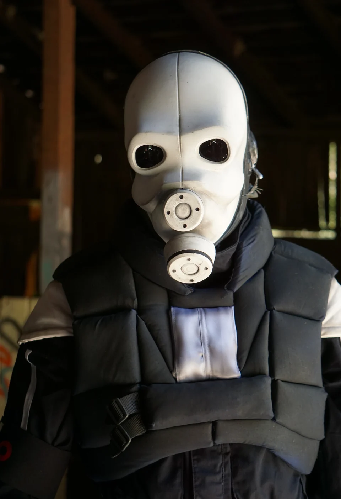
Helmet and vest
The first helmet prints had fit problems, so I restarted with another model. I made the vest from separate foam panels, wrapped them in fabric, and connected them with cloth strips on the back.
I checked the fit against the references, then trimmed, reshaped, and reassembled the panels.
Voice electronics
The voice modifier was my first Arduino project. It uses a Nootropic Design Audio Hacker shield, and its enclosure was my first Fusion 360 project.
Later components
Later work included redesigned belt boxes, ventilated costume filter components, and a stunstick based on Pixelitz’s Half-Life 2 HD remake. In Fusion 360, I worked on assembly, print orientation, and hiding print marks.
Build notes and templates
I photographed the work as I went and shared vest templates. The full journal collects the construction notes, test fits, and revisions from 2019 onward.
Citadel Supply Co.
I now make Metrocop props and accessories through Citadel Supply Co., including the stunstick and light-up belt box.
Sources & credits
The early build references mb814’s Metrocop model and textures, alongside Half-Life 2 and Half-Life: Alyx. The original baton used Lybos’s Police Baton model; the later design references Pixelitz’s HD remake. The replacement helmet in 2021 used an Etsy model; its creator is not identified in the original thread. These sources are distinct from my fabrication, adaptations, and later component designs.
Read the original RPF thread for the complete discussion and community contributions. Half-Life and its characters belong to Valve; this is an independent fan project.
Stunstick
This version uses a PVC pipe core and printed components. I sanded and painted the assembled parts.
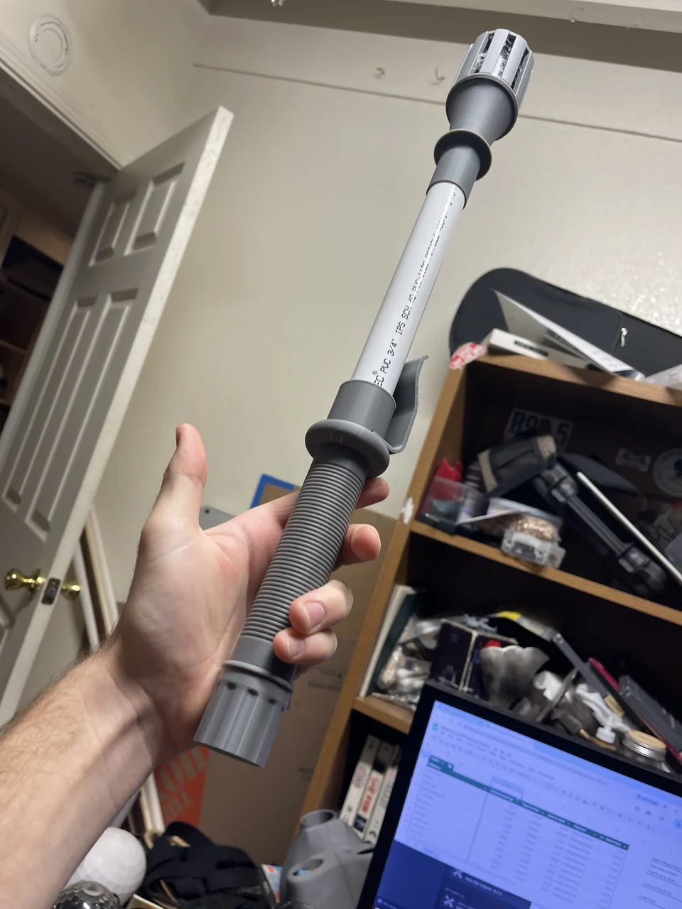
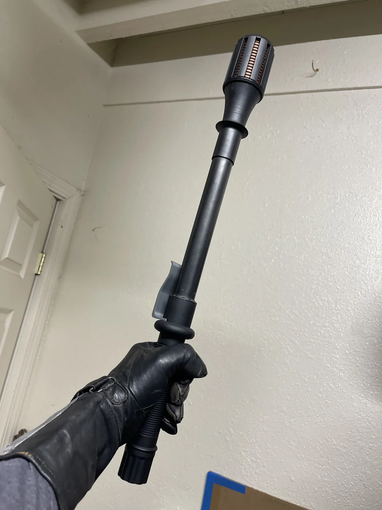


Belt Boxes
I modeled the belt boxes from the game references. The illuminated boxes use puck-light components; the switch box has a separate front grate and belt mount.
Buy the light-up belt box on Etsy
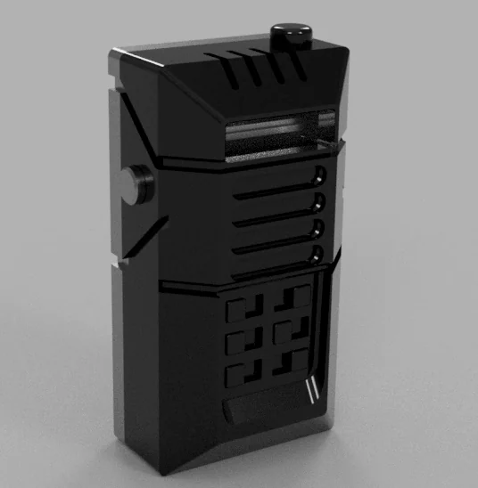
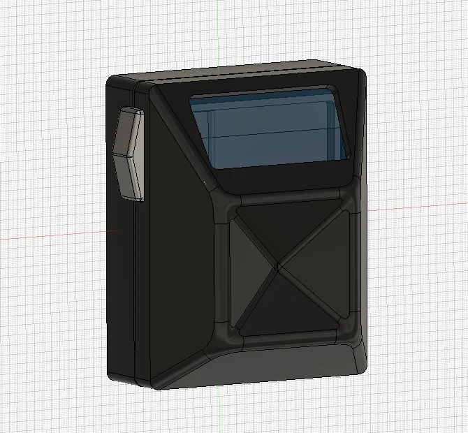
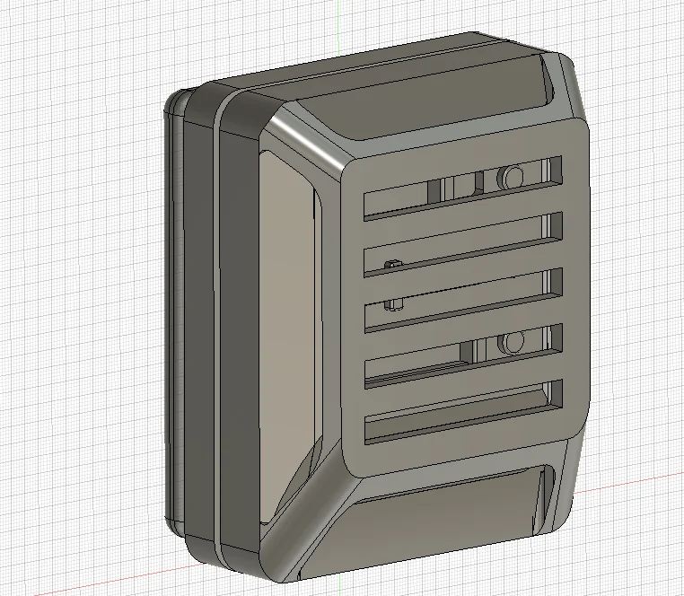
Radio Box
I split the radio box into printable parts and left access to the lighting and batteries.
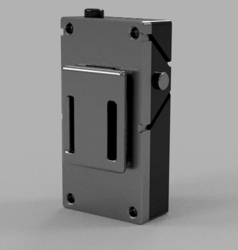
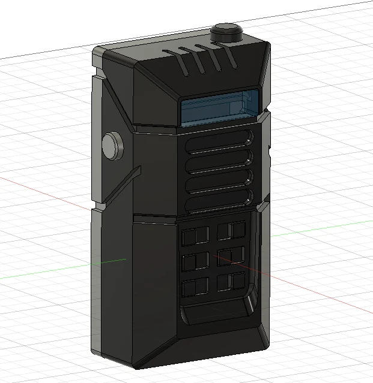


Pager Box
The pager box has a removable front panel with the lighting and battery compartment behind it.
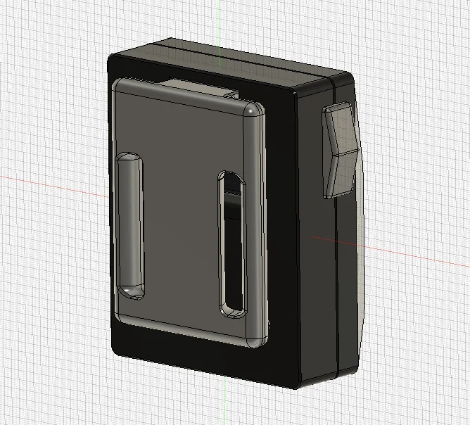
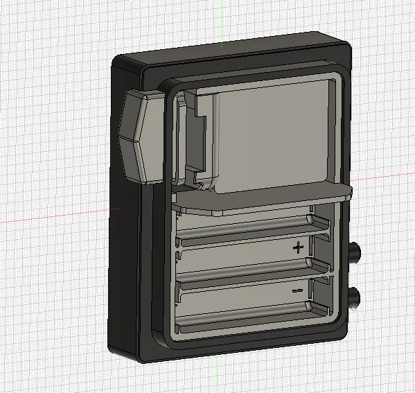


Switch Box
The switch box has a separate grate and internal switches. Printing those parts separately makes them easier to finish and assemble.
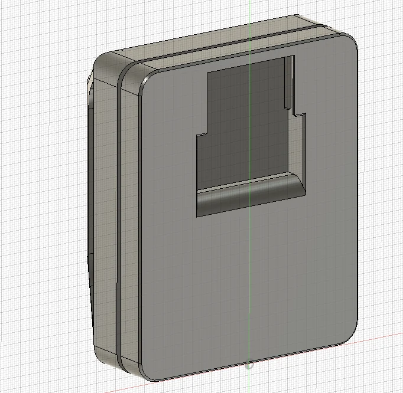
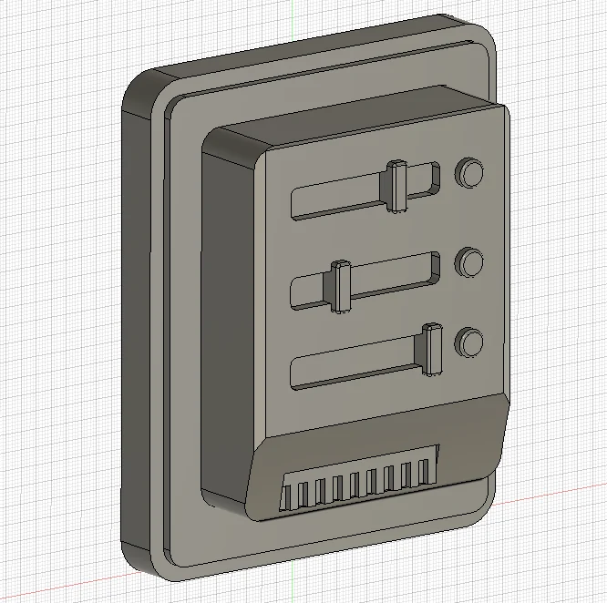